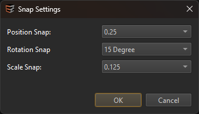
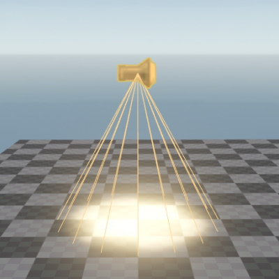

Editing Gizmos
This page describes the most common tools to interact with objects in a scene.
Standard Gizmos
The standard gizmos are Translate (W), Rotate (E), Scale (R) and Drag-To-Position (T). They can be disabled using the Q key.

Click and drag a gizmo to modify the selected objects. The Drag-To-Position gizmo moves the selected object to the position that you point at. If you select one of the six handles, instead of its center, it will additionally align the selected axis with the surface normal of what you point at.
The translate and the rotate gizmo may operate either in local space (object space) or in global space (world space). You can toggle the space either using the world icon from the toolbar, or by selecting the tool again. For instance, press W once to enable the translate gizmo, press W again to toggle the space.
Modifiers
Hold
SHIFTwhile dragging a gizmo to disable snapping.Hold
CTRLbefore clicking a gizmo to duplicate the object in place. This works for all but the scale gizmo.
Gizmos in Orthographic Views
When the Translate, Rotate or Scale gizmo is active, holding LMB and moving the mouse will modify objects. The perspective of the selected view (top-down, front, right) determines along which axis the object will be translated or rotated (always in global space). Scale will always be uniform.
Note:
The 3D gizmos are not displayed in orthographic views, just left-clicking anywhere in the view will perform the selected action.
Snap Settings
Press End or the respective icon from the toolbar to open the snap settings:

These affect not only the gizmos, but also the positioning of assets dragged from the asset browser into the scene.
Grid
The grid can be toggled with the G key or the grid icon from the toolbar. If enabled, the grid shows up for the transform gizmo and in greyboxing mode. For the translate gizmo you can choose in which plane the grid is shown, by clicking one of its quads. Afterwards you can still move along the orthogonal axis by dragging the respective axis handle.
The density of the grid shows the current position snap value. If position snap is disabled, the grid will not show.
Manipulators
Manipulators are component and property specific gizmos. Properties of a component that can be changed with a manipulator, are highlighted in blue (off) or violet (on). You can click the property label to toggle the manipulator mode. Once a manipulator is enabled, all Standard Gizmos are disabled. You can now also use the Q key to toggle manipulator mode off and on.

Manipulators in Orthographic Views
Most manipulators will not be available in orthographic views.
Visualizers
Some components use visualizers to make some of their aspects more obvious, such as the cone of the spotlight in the image below. These visualizers are only drawn for selected objects and can be toggled using the V key. When visualizers are enabled, the editor will also display a yellow bounding box around each selected object.

Video